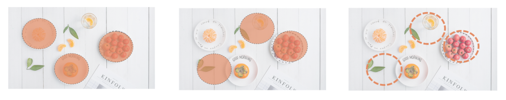
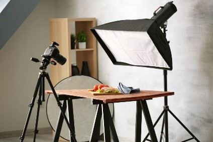
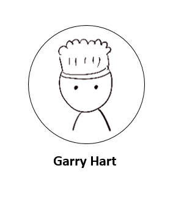
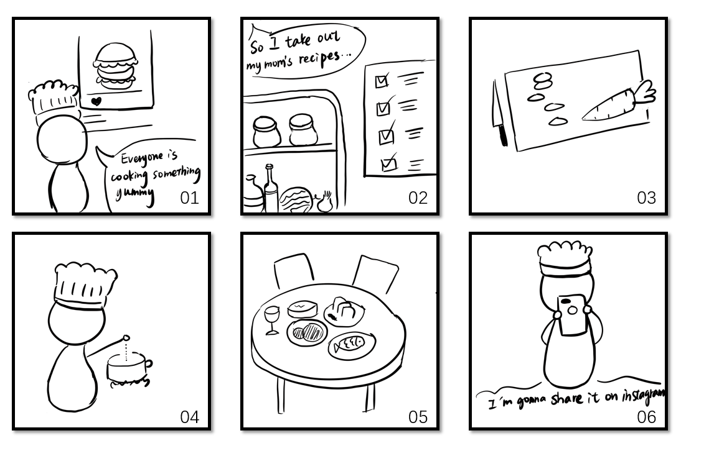
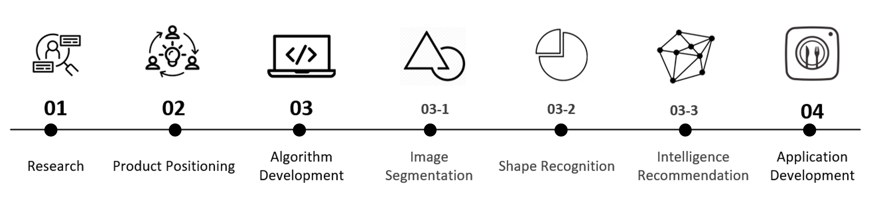
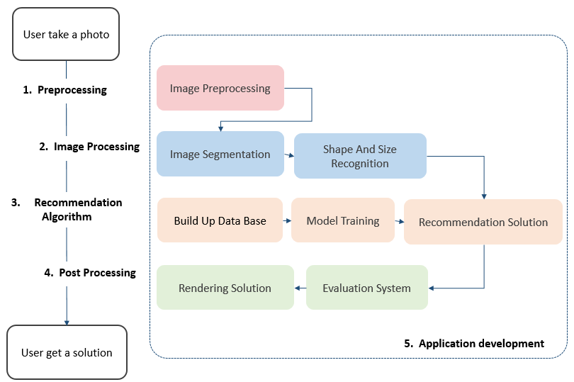
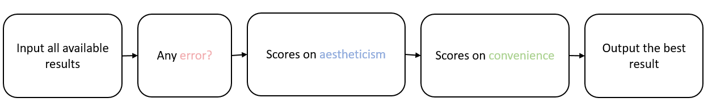
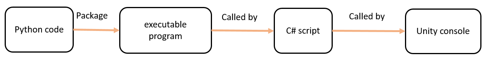

OVERVIEW
Introduction

FootShot is a mobile application focusing on composition guidance for food pictures
My Roles
Algorithm Engineer, Product Designer, Team Leader
Tools
Python, C#, AI Algorithm, Unity, Photoshop
Duration
Junior Year, 12 Weeks
OVERVIEW
Introduction

FootShot is a mobile application focusing on composition guidance for food pictures
Ideation
How can we help a layman take better photographs?
Nowadays, everyone has a mobile phone, photography has never been easier. It's not a simple task to take good pictures for laymen.

Challenge 1:
Professional photography is difficult to learn and expensive to pay for.
Challenge 2: Current Composition algorithm only cut original pictures, which is limited.
Define factors related to photography:

We drew a mind map to summarize factors that influence photo shooting, and decided to focus only on composition of food photos before or during the shooting.
User Persona

28 years old
Engineer
Living alone
Love Cooking

Journey Map

Product Design
I present you FoodShot, an Android application that provides real time food photography composition guidance for its users.

Wireframe

Project Merits

Implementation Process

Our algorithm development can be divided into four major parts. Below is the overall flowchart.

My Programing Contribution:
I mainly built up our data base, evaluation system and contributed to application development.
Data Collection

When mining for training photos, I used two python pack, one is google_images_download, the other is Python request. I applied them to three search engine with key words.

Through this method, I collected over 18,000 photos After that, we discarded irrelevant, repeated and poor quality photos and got around 12,000 food pictures that made up the final data base.

In the intelligent recommendation module, BP neural network is adopted for learning and training.
Evaluation system


My algorithm evaluates the preliminary results from three perspectives, and output the one with highest scores
Application Development

I also implemented the cross language development through Unity. The picture shows the demo function I realized.

Result Analysis
Demo Video: https://youtu.be/YuT-WvWDix8


We later used Photoshop to polish the result picture and turned it into a post (picture on the left). This illustrates one applicable scenario for FoodShot.
Copyright © 2020.ZihuiLin All rights reserved.粤ICP备2020096109号